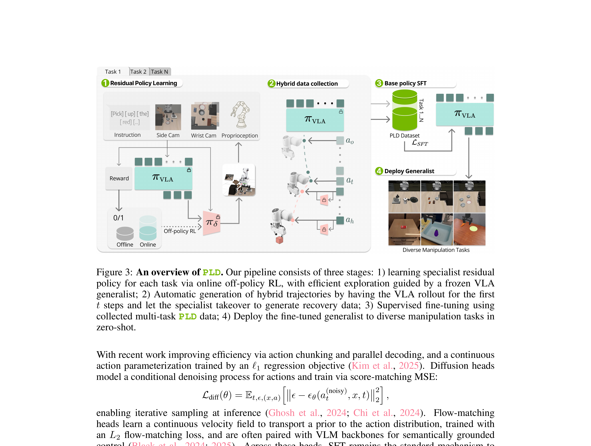

Self-Improving Vision-Language-Action Models with Data Generation via Residual RL
Xiao 等 · 2025 · arXiv:2511.00091 · Zotero IG59EPPZ
PLD 不把 RL 当最终部署策略，而把它当‘失败恢复数据生成器’：Probe 找失败区，Learn 学 residual，Distill 再蒸馏回通用 VLA。
§1 Introduction：自我改进的关键为什么是“收集什么数据”而不只是“如何做 RL”
通用 VLA 的人类示范覆盖广但不密，某个具体任务失败时，直接用在线 RL 训练大模型既昂贵又容易遗忘。训练任务专用 specialist 可以更快找到成功轨迹，但若只收集 specialist 的窄分布数据，再蒸馏回 generalist，模型可能过拟合专家轨迹并损害未见任务泛化。
PLD（Probe–Learn–Distill）把三阶段分开：冻结 base VLA，以轻量 residual actor 在线 RL 学 task specialist；数据收集时先让 base policy probe 若干步，再让 residual 在需要的状态接管，使 replay 同时覆盖 generalist 常见状态和 specialist 恢复状态；最后把成功轨迹蒸馏回 VLA。自改进不是让 base 在线乱改，而是让 specialist 充当主动数据采集器。
展开原文 · 数据闭环
“residual policy probing and distribution-aware replay are key”
§2 Related Work：DAgger、自训练与 residual specialist
DAgger 在 learner state 上请求专家标签，self-training 用模型生成数据继续训练；机器人 RL specialist 则能从奖励自主寻找恢复策略。PLD 用 residual RL 替代持续人工标注，再用 probe/takeover 调节数据分布，避免 specialist 独占 rollout。
与 HIL-SERL 相比，它希望减少每次失败的人类接管；与 BORA 相比，residual 不直接作为最终在线部署模块，而是先生成改进数据再蒸馏回 generalist。蒸馏能保持单一 VLA 接口，但也会压缩 specialist 的多模态行为，必须监测旧任务与未见任务退化。
§3 问题设定：SFT 到底漏掉了什么
VLA 预训练与 SFT 解决“从观测到动作的模仿”，但部署是闭环过程：动作会改变下一帧，错误会把策略带到演示没有覆盖的状态。人类演示昂贵，而且常常没有覆盖基座真实部署时会走进的失败状态。
基座 VLA 不直接承担探索；每个任务训练轻量 residual specialist，专门接管基座会失败的状态。
展开原文 · 核心主张
“RL-generated, policy-aligned data can surpass teleoperation-only demonstrations”
§4 方法总览：反馈信号怎么走
上一节明确了状态、动作与反馈，现在沿论文原图追踪训练信号。重点不是背模块名，而是判断：哪部分保持预训练先验，哪部分真的被 RL 改写。

1. Probe：冻结 VLA 并定位失败区域
Probe 阶段冻结 generalist VLA，在真实或仿真任务上系统 rollout，定位成功率下降的状态区域。它输出的不只是失败视频，还包括触发条件、上下文与可复现的失败分布。
输入是什么：相机图像或视频，加上任务指令和机器人当前状态。它们还是原始观测，模型尚未把它们变成可用于预测或控制的特征。
这一步究竟做什么：Probe 阶段冻结 generalist VLA，在真实或仿真任务上系统 rollout，定位成功率下降的状态区域。它输出的不只是失败视频，还包括触发条件、上下文与可复现的失败分布。
输出到哪里：一个或多个候选未来、动作或轨迹，以及必要的中间状态。这个结果会交给下一步“Learn：训练任务级 residual 专家接管失败状态”继续处理。
为什么不能省略：它把未经处理的原始问题变成后续模块可以计算的输入，是整条链路的起点。
2. Learn：训练任务级 residual 专家接管失败状态
Learn 阶段为失败区域训练小型 residual 专家。专家只在 probe 判定的困难状态接管，利用 RL 探索恢复动作；基座继续处理已会的部分，降低训练风险与样本需求。
输入是什么：来自上一步“Probe：冻结 VLA 并定位失败区域”的产物：一个或多个候选未来、动作或轨迹，以及必要的中间状态。本步骤还会按论文设置读取当前条件、时间步或训练信号。
这一步究竟做什么：Learn 阶段为失败区域训练小型 residual 专家。专家只在 probe 判定的困难状态接管，利用 RL 探索恢复动作；基座继续处理已会的部分，降低训练风险与样本需求。
输出到哪里：参数得到更新的模型，或能供下一轮训练使用的新监督信号。这个结果会交给下一步“混合 rollout 收集恢复与正常轨迹”继续处理。
为什么不能省略：前面的数据或分数本身不会自动改变模型；必须通过损失函数把误差信号变成参数更新。
3. 混合 rollout 收集恢复与正常轨迹
部署混合策略收集两类数据：基座正常轨迹和专家恢复轨迹。二者同时保留，避免只蒸馏纠正样本导致模型忘记原有行为，也让状态分布自然覆盖失败前后。
输入是什么：来自上一步“Learn：训练任务级 residual 专家接管失败状态”的产物：参数得到更新的模型，或能供下一轮训练使用的新监督信号。本步骤还会按论文设置读取当前条件、时间步或训练信号。
这一步究竟做什么：部署混合策略收集两类数据：基座正常轨迹和专家恢复轨迹。二者同时保留，避免只蒸馏纠正样本导致模型忘记原有行为，也让状态分布自然覆盖失败前后。
输出到哪里：一个或多个候选未来、动作或轨迹，以及必要的中间状态。这个结果会交给下一步“Distill：用 SFT 把数据蒸馏回 generalist”继续处理。
为什么不能省略：学习算法只能从它见过的经历中改进；这一步决定训练数据是否覆盖成功、失败和恢复状态。
4. Distill：用 SFT 把数据蒸馏回 generalist
Distill 用 SFT 把专家产生的恢复动作并回 generalist VLA，然后移除临时专家重新 probe。若下一轮失败区域缩小，才说明自提升成立；否则只是外挂 residual 在工作。
输入是什么：来自上一步“混合 rollout 收集恢复与正常轨迹”的产物：一个或多个候选未来、动作或轨迹，以及必要的中间状态。本步骤还会按论文设置读取当前条件、时间步或训练信号。
这一步究竟做什么：Distill 用 SFT 把专家产生的恢复动作并回 generalist VLA，然后移除临时专家重新 probe。若下一轮失败区域缩小，才说明自提升成立；否则只是外挂 residual 在工作。
输出到哪里：参数得到更新的模型，或能供下一轮训练使用的新监督信号。这是图中这条链路的最终产物，随后会进入真实执行、模型更新或指标评测。
为什么不能省略：前面的数据或分数本身不会自动改变模型；必须通过损失函数把误差信号变成参数更新。
§5 机制细拆：动作、价值与更新边界
上图给出了宏观流程，但真正决定训练是否稳定的是三个接口：动作以什么粒度出现、反馈怎样变成可学习信号、哪些参数允许被更新。
§6 目标函数：把直觉压缩成可检查的量
前一节说清了信号路径，这里把核心优化目标写成教学化公式。读公式时依次检查：回报影响谁、数据支持在哪里、预训练策略受到什么约束。
- $D_{PLD}$
- 由 residual RL 策略对齐生成的数据
- $\ell$
- 动作头对应的 SFT 损失
- $\theta'$
- 蒸馏后的通用 VLA
Stage 1 只学 residual，Stage 2 自动收集 PLD 数据，Stage 3 用普通 SFT 把多任务恢复轨迹蒸馏回通用 VLA。
§7 训练与评测：数字是在什么条件下得到的
只看最终成功率会隐藏数据预算、仿真/真机差异和基座强弱。本节把论文的实验对象与比较关系放回同一张表。
| 策略与动作 | 基座 VLA 不直接承担探索；每个任务训练轻量 residual specialist，专门接管基座会失败的状态。 |
|---|---|
| 训练反馈 | specialist 用稀疏成功奖励学习；hybrid rollout 控制何时由基座或 residual 执行，从而采到恢复动作且贴近部署分布。 |
| 更新方式 | Stage 1 只学 residual，Stage 2 自动收集 PLD 数据，Stage 3 用普通 SFT 把多任务恢复轨迹蒸馏回通用 VLA。 |
| 实验覆盖 | 评测覆盖 LIBERO-90 不同任务覆盖率、SimplerEnv，以及 Franka 与 YAM 双臂真机；还展示 GPU 插拔一小时连续运行。 |
| 关键对照 | 直接拿基座自己 rollout 的 0/1 REINFORCE 数据质量低；纯人类数据质量高但未必覆盖基座真实失败分布。PLD 试图同时取得二者优点。 |
§8 结果怎么读：证据、因果与可迁移结论
论文报告 LIBERO 近 99%、SimplerEnv 超过 50% 增益，并在 Franka/YAM 真机任务达到 100%。
直接拿基座自己 rollout 的 0/1 REINFORCE 数据质量低；纯人类数据质量高但未必覆盖基座真实失败分布。PLD 试图同时取得二者优点。
RL 可以是数据引擎，而不是最终部署策略。这条路线往往比长期保留多个 specialist 更易扩展。
§9 复现与工程检查
前一节判断了证据强度，复现时还要把训练信号对齐、时间尺度和数据统计逐项落地，否则“同名算法”也可能得到完全不同的结果。
- hybrid takeover 概率和状态覆盖要可视化；蒸馏前要区分成功恢复与偶然成功；对 seen/unseen task 分别汇报。
- 先跑通不加 RL 的预训练/SFT 基线，并保存逐任务成功率与失败视频。
- 同时记录环境步数、真实墙钟时间、人工介入次数、更新次数和推理延迟。
- 把奖励、终止、action chunk mask 与归一化统计做成可视化单元测试。
§10 适用边界与研究启发
自提升质量取决于 residual 专家能否覆盖关键失败区；蒸馏仍可能遗失专家的少数行为。
RL 可以是数据引擎，而不是最终部署策略。这条路线往往比长期保留多个 specialist 更易扩展。